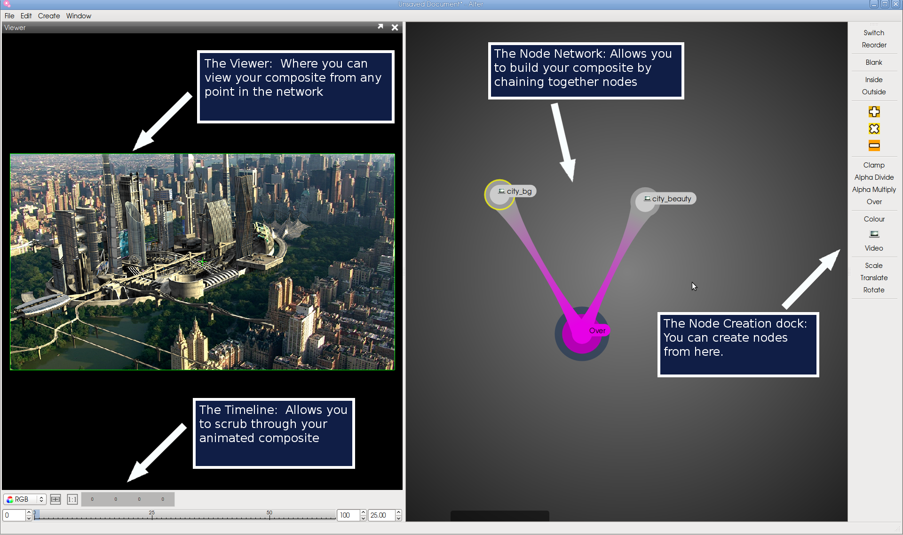

Synapse Node Network Help
Using the Node Network
The Node Network is the main way that you interace with Synapse (working title). It works in a similar way to many compositors. Each node has a specific number of inputs
depending on the functionality of that node, and a single output that can be connected to any number of other nodes. To build a Node Network, you connect your source nodes,
which contain your initial images, video, and colours, into a series of nodes that perform specific operations on the source pixels. For example, given an Image node and a Colour node
containing the colour blue (red = 0, green = 0, blue = 1), you can pipe these into an Add node, and the colour blue will be uniformly added ontop of every pixel from the Image
node. This tutorial will show you how to do this in Synapse, as an easy introduction to how the compositor works.

Before we start, ensure that the Node Network is centred in the screen. If not, right click on the Node Network and click "Make This Dock Central". This will allow the other docks
(The viewer, the Log, and the Node Creation dock) to snap to the edges of the Node Network dock. You can move these docks around the Node Network by clicking and dragging.
The first thing we're going to do is create a Colour node to add to the image we are going to load later on. In Synapse, nodes can be accessed in 2 ways; through the Node Creation Dock, or through
the right-click radial menu. To create a the node from the Node Creation Dock, just click the "Colour" node, and it will be created in the centre of the Node Network. To use the radial menu,
simply right click on any empty space in the Node Network, mouse over the "Source" section until a new radial menu appears, and then click "Colour". The node will be created where you right clicked.
Interfacing with Nodes
|
Before we continue, I will go over a quick overview of how to use the nodes. Each node is constructed of 2 parts, an inner ring and an outer ring. The inner ring is used to select and move the
node around in the Node Network. Just left click and drag a node from the centre to do this. You can also use the nametag to select and move the node.
The outer ring allows you to make connections, and represents the node's output. Left click and drag on the outer ring to begin dragging a connection. You can also drag a connection by holding
down Alt and dragging from anywhere inside the node.
In Synapse, the parameters and properties of a node can be accessed by right clicking on them. Alternatively, you can open the properties of all selected nodes by pressing Ctrl-Q.
The output of a node can be viewed by double clicking it, and is represented by a blue halo around the viewed node.
The inputs of Nodes are represented as circles on the node, and are hidden by default until you drag a connection over one. However, you can set nodes to always show their inputs
by selecting them and pressing CTRL-I.
|

|
Now that I've covered the basics of using nodes, open the properties on the Colour node, and you will see a radial colour picker appear. Using the colour picker,
select a blue colour, or if you'd prefer, click the "Sliders" tab and manually enter the RGB colour components (in this case R = 0, G = 0, B = 1).
The next thing we're going to do is to load in an image. This means creating an Image node. Do this from either the Node Creation dock or the radial menu.
When you first create an image node, a window dialog will open automatically. Browse to the "city" folder (under "vex/calc/examples/"), and select city_beauty.tif, or you can load your
own image. Once you have opened the file, and the dialog has closed, double click the Image node to see its output in the Viewer.
Now that we have our 2 source nodes loaded, we need to add them together. This is done with an Add node. When you create this node, you will see that its outer ring is noticably larger than the
source nodes we have just created. This is to reflect the number of inputs each node has. As source nodes have no inputs (being at the start of the node chain), they are much smaller than all other
nodes in the Node Network.
Now that we have all the nodes necessary to perform the composite, we need to chain them together. Do this by clicking the outer ring of (or Alt-clicking) the "Image" node,
and dragging away towards the Add node. You will see a connection pull out from the centre of the "Image" node. While dragging, mouse over the "Add" node and let go when the "Background" input
circle is highlighted. Now do the same from the "Colour" node, but connect it to the "Input" circle of the "Add" node. Double click the "Add" node to see the final composite.